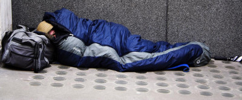

Курс по оцеляване - препитание и нощуване в чужбина

Препитанието в чужбина е важен въпрос за вашето оцеляване като гастербайтер. Намирането на храна може да бъде както сравнително лесна, така и доста трудна задача.
В този fast-track курс ще ви научим как да се справяте в новата среда и да си лягате сити в първите дни на вашето живуркане в чужбина. Практически съвети, изпробвани в реалния живот от нашите трейнъри.
- Безплатна прехрана в домове за бездомници и бази на ,,Армията на спасението".
- Съвети за намиране на подслон в различните географски ширини - техники за здрав сън на открито, докато намерите първата си работа и можете да си позволите квартира.
- Съвети за лична хигиена - къде можем да се изкъпем безплатно или за минимална сума, докато сте все още бездомни и без работа.
- Как да предизвикваме съчуствие в местното население, така че да им дожалее за вас и да ви почерпят с нещо.
Курсът приключва с практически изпит. Участниците ще трябва да преживеят 1 седмица из улиците на Перник с 20лв в джоба. Успешно издържалите изпита няма да получат нищо.